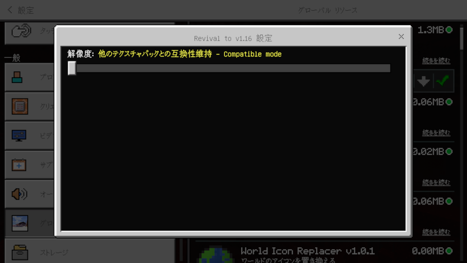

Revival to v1.16
変わってしまったUIを1.16風にできる限り戻しました!!!!
変わってしまったUIを1.16風にできる限り戻しました!!!!
変わりゆく、統合版のユーザーインターフェース.......。
時代とともに、統合版のUIなどもいろいろ変わってしまってしまいました。
5年間くらい統合版やってきた私からすると、昔のほうが良かった。
なんとかならないかと思った私は、持ってるUIの技術で、変わってしまった統合版のUIをv1.16あたりのUIにできる限り戻すことにした。
注意
このリソースパックを使うことで、v1.16にダウングレードすることは出来ません。
また、このリソースパックを使ってRender Dragonを削除することは出来ません。
あらかじめご了承ください。 m(_ _)m
このリソースパックを入れると何が変わるの？
今のところ、以下に対応しています。
- タブをマウスホバーしても緑色にならない。
- 「一般」タブと「アカウント」タブを再統合し、設定画面の「プロフィール」タブを復活。
- 設定画面のアクセシビリティ設定のアイコンを元に戻す。
- 設定画面とチャット設定画面の灰色っぽい背景を黒に戻す。
- 日本語翻訳が1.16時代の翻訳を90%再現。 (ブロック名、アイテム名、一部のＵＩ表記。)
- 日本語翻訳にかつて存在していたガバガバ翻訳を99%再現。
- スコアボードsidebar、ポーズ画面のUIを戻す。
- クリムゾン・ゆがんだ木材の音を幹と同じにする。
- ドア、トラップドア、フェンスゲート、ボタン、感圧板の音がリニューアル前に戻る。
- 水の音がリニューアル前に戻る。
- ベルの音が実装当初の音程に戻る。
- インベントリ画面などの背景が再び濃くなる。
- ホットバーの透明度が再び薄くなる。
- トグルスイッチのOFFの状態のテクスチャ、ポーションのテクスチャが元に戻る。（＊）
- タイトルロゴが昔のタイプに戻る。
（＊）の付いた要素は、パック設定から無効にできます。
これにより他のテクスチャパックとの互換性を高めます。

パック設定画面
UIクリエイター向け情報
このパックが適用されているかどうかで表示を変えたい場合、
_global_variables.jsonにこれを入れれば、ignoredなどで表示切替できます。
"$1_16_revival_enabled|default": false例: Revival to v1.16が適用されていれば非表示にする
"ignored": "$1_16_revival_enabled"